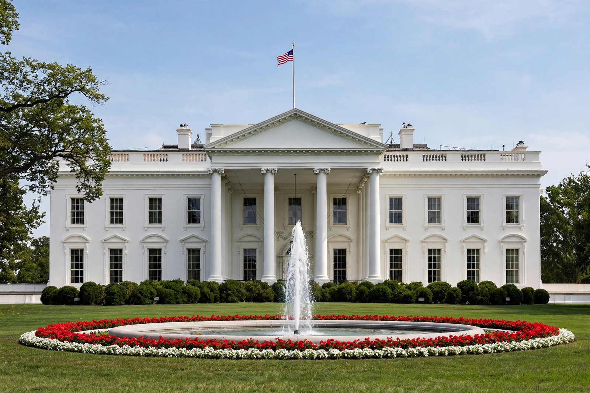

| White House | |
 The north front of the White House | |
| Address | 1600 Pennsylvania Avenue NW, Washington, D.C. |
|---|---|
| Architect | James Hoban |
| Built | 1792–1800; rebuilt 1814–1817; reconstructed 1949–1952 |
| Style | Neoclassical / Palladian |
| Function | Official residence and principal workplace of the President of the United States |
The White House is the official residence and workplace of the president of the United States. Located at 1600 Pennsylvania Avenue NW in Washington, D.C., it has been the residence of every U.S. president since John Adams in 1800. The term "White House" is often used as a metonym for the president and his advisers.
The site was selected by George Washington, and the Irish-born architect James Hoban won the design competition with a neoclassical mansion inspired by Leinster House in Dublin. The cornerstone was laid in 1792 and Adams moved in during 1800. British troops burned the house in 1814 during the War of 1812; it was rebuilt under Hoban, and President James Monroe moved back in 1817. The famous white-painted Aquia Creek sandstone gave the house its popular name, officially adopted by Theodore Roosevelt in 1901.
The complex includes the Executive Residence, the West Wing — built under Theodore Roosevelt and containing the Oval Office — the East Wing, and the Eisenhower Executive Office Building. The residence has six storeys including basements, 132 rooms, and 35 bathrooms. The State Floor holds the ceremonial rooms: the East Room, the State Dining Room, and the Red, Blue, and Green Rooms.
By 1949 the building was structurally failing; President Harry S. Truman had it completely dismantled and reconstructed with a modern concrete frame and two sub-basement levels, completed in 1952. Jacqueline Kennedy's 1961–62 restoration refurnished the state rooms with historical pieces. The grounds, about 18 acres, include the Rose Garden and the North and South Lawns.